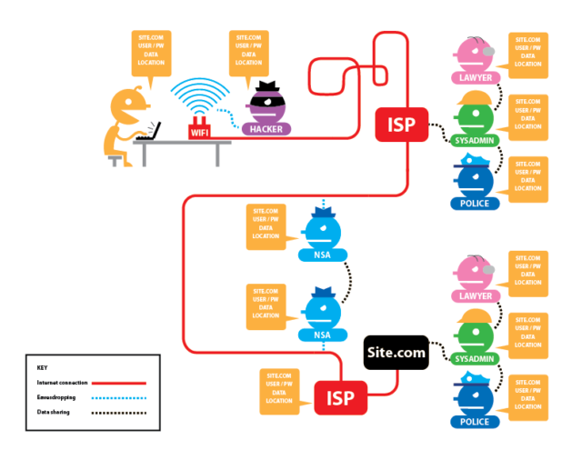
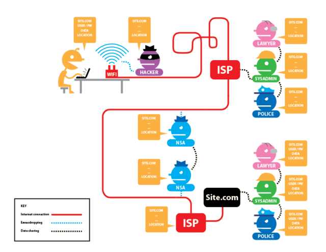
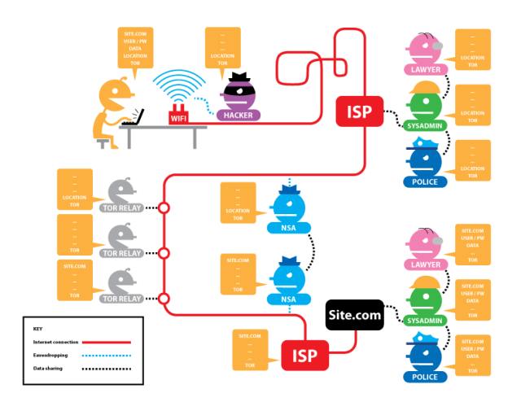

Not five years ago, as Edward Snowden unveiled thousands of classified and secret documents, the world became shockingly aware of a covert, suspicion-independent and global mass-surveillance of the Internet and telecommunication networks, which had been operated by the so-called “Five Eyes” (Australia, Canada, New Zeeland, UK and the USA) at least since 2007. This surveillance relied on monitoring programs such as PRISM (with the more or less voluntary participation of Microsoft, Yahoo!, Google, Facebook, Paltalk, YouTube, AOL, Skype und Apple), XKeyscore (a system to perform virtually unlimited monitoring of anyone around the world using metadata and content), and Tempora (skimming and caching almost all Internet traffic directly from the network hubs and transatlantic data links). While the public outrage after Snowden’s revelations was unprecedented, this has since largely subsided, and Intelligence Services enjoy once again nearly unhindered ability to siphon off, evaluate and store data on a large scale. With all probability, the methods of the “Five Eyes” and those of their larger partners are even more sophisticated today. What is more, initial sporadic protests had little if any effect: in the US, for example, the legal basis for PRISM and the like was not even challenged at the time, hence it remains firmly in place. Not even the US President, Donald Trump, seems inclined to curtail the powers and behaviour of US intelligence agencies in this respect.

But does global mass surveillance help prevent terrorism? To date, there are no facts that support this thesis. In fact, most attack perpetrators over the last 15 years were already known to the authorities. And very often, intelligence services focus on completely unrelated people and interests. For example, the legal framework in the US allows interception of foreign officials, as well as the gathering of economic and decision-making information with undue purposes such as predicting the future price of oil, or gaining a favourable position in international negotiations – and the NSA is not the only organisation with a political and economic agenda (Emmanuel-Pierre Guittet, “Is Mass Surveillance Effective in the Fight against Terrorism?“, Mapping Security, 11.12.2015).


To make matters worse, various intelligence services and law enforcement agencies make unrestricted use of the same data pool (Sam Adler-Bell, “10 Reasons You Should Still Worry About NSA Surveillance“, The Century Foundation, 16.03.2017). This creates the prerequisites for undermining the presumption of innocence. And we can hardly understand its relevance: It is nothing less than a human right (Article 11 of the General Declaration of Human Rights), and a basic principle, which distinguishes proceedings based on the rule of law from a witch hunt. For example, it is much harder for a person to prove why research on terrorism was only meant to gather necessary knowledge, and not to prepare for an attack, than it is for state authorities to prove not just vague evidence, but a concrete offence (one or two students can sing a song about it – see here or here). At the same time, another fundamental human right is utterly disregarded: the right to privacy (Article 12).
The mass accumulation of data, regardless of whether an actual suspicion exists, not only places each individual under a disproportionate general suspicion, but also disrespects fundamental human rights. All in all, Snowden’s revelations have not eroded the data gathering voracity of the major intelligence agencies. For example, the NSA Data Centre in Utah is seemingly operative since 2014, after some initial difficulties. This facility is responsible for evaluating and storing data collected by PRISM and other monitoring programs. According to William Binney, former senior technical director at the NSA, this data centre alone holds at least 5 zettabytes (5,000,000,000,000,000,000,000 bytes) of data, which should be enough for the next 100 years.
We kill people based on metadata. — General Michael Hayden, ehemaliger Direktor der NSA und der CIA in “The Price of Privacy: Re-Evaluating the NSA“, The Johns Hopkins Foreign Affairs Symposium, 2014, ab 18′.
For all their power, the “Five Eyes” are not the only organisations that massively siphon off network and telecommunications data. The German Federal Intelligence Service (BND) collects around 220 million metadata records per day, and stores them for up to 10 years (as of 2014; see also: Kai Biermann, “BND speichert jeden Tag 220 Millionen Metadaten“, Die Zeit, 06.02.2015). Of these, the BND submits 1.3 million data records to the NSA on a monthly basis. Another example: Switzerland’s Federal Intelligence Service (NDB) monitors satellite, telecommunication and relating thereto internet connections. Under the name ONYX, the NDB runs a smaller version of the global ECHELON interception system. True to the bartering nature of the intelligence services business, the NDB cooperates with other foreign intelligence services. As a matter of course, Switzerland would not receive any key information from the Americans without some form of trade-off; this was the case, for example, in September 2014 (see: Thomas Knellwolf, “Terrormiliz IS plante Anschlag in der Schweiz“, Tagesanzeiger, 23.09.2014). Ironically, on the very day when Federal Councillor Ueli Maurer publicly stated the “lack of contact” between the NDB and the NSA, documents leaked by Edward Snowden explicitly mentioned Switzerland as a cooperation partner (see picture below).

In spite of all criticisms, every constitutional state establishes political control bodies of varying power, whether this is weak (USA) or strong (Switzerland). And the fact remains that this situation is notably more unpleasant in countries with little respect for the rule of law, let alone in authoritarian regimes, regardless of whether a person lives, does business, or spends his holidays there. In such regions, it is safe to assume that, without protection, all network and telecommunication traffic will be recorded, evaluated and stored. What is more, boundaries between state intelligence services and criminal or violent groups could be fluid. In this type of state, open criticism can swiftly lead to long-term prison sentences (or even worse). Whilst locals develop a certain sensitivity to protect – or censor – themselves, business people and tourists make an easy target for such often shady organisations. Open wireless networks in Internet cafes and hotels invite to work and surf. Are all data really encrypted at all times? Who knows who is sniffing around or actually operating these wireless networks (and do not be misled by the “Starbucks” network name – this says nothing about the actual network operator – see video below).
Or might it be that you have nothing to hide? If so, feel free to disclose all your passwords, emails, credit card details, bank statements, pay slips, tax returns, political orientation, health status, sexual preferences, etc. (see here, here, here ).
But this goes far beyond the rights and safety of each individual. Surveillance exerts a sustained influence on society’s behaviour. The Chinese government (and the Alibaba Group) already endeavour to reap the “benefits” of this social effect: By 2020, a social credit system – already partially implemented – will become binding for the Chinese citizens. Among other things, the allocation of social credit points depends on the individual’s online behaviour – needless to say, always from the point of view of the government. But the system does not stop there: the evaluation and corresponding rating will also factor in offline information. For example, the acquisition of domestic goods may have a rather positive impact on the rating, while favouring imports from certain countries may drag it down significantly. The “social rating” is not only influenced by the own actions, but also by social network i.e. friends and their actions, etc. For example, strong ratings may improve creditworthiness and access to jobs, as well as the celerity in dealing with your bureaucratic processes; conversely, poor ratings might have an adverse effect on all those areas (Stanley Lubman, “China’s ‘Social Credit’ System: Turning Big Data Into Mass Surveillance“, Wall Street Journal, 21.12.2016). It seems obvious that this sort of system implements social control mechanisms that put people straying from the norm under considerable pressure. Indirectly, this enacts a social re-education program to enforce state-compliant behaviour, without any apparent government involvement.
Although China is the salient example of such a social credit system, similar approaches are internationally recognisable. In fact, companies assessing individual creditworthiness have been around for a long time. And are you still wondering why you cannot get an Uber cab anymore? Well, chances are you have a dismal passenger rating (in any case, Uber knows if their customers had a one-night-stand). If you have your eyes open, you will spot such rating systems in many services and apps. In the long run, however, these systems may prove problematic, as increasingly independent social aspects are considered and evaluated. The Danish company Deemly is a good case in point. In this context, the “Nosedive” episode in the “Black Mirror” series, a popular critique of technology and its social impact, seems to have a prophetic nature.
Such long-term trends and their social effects can only be tackled through legally guaranteed protection of privacy and personal data (including the resulting metadata). In doing so, the state plays a pioneering role and sets an example. However, since we are not ready yet, and the current development provides no reason for exuberant optimism, it is worthwhile to build up a certain, minimum self-protection.
But aren’t such protective measures technically complex and expensive to implement? This argument cannot be completely dismissed, as privacy protection and data security do not by improve by themselves. The exchange of encrypted emails between Edward Snowden and the journalist Glenn Greenwald failed initially due to the complexity of the PGP encryption program – despite or possibly because of Snowden’s 12-minute explanatory video (Andy Greenberg, “The ultra-simple App that lets anyone encrypt anything“, Wired, 07.03.2014). We would like to present a few examples and references to show that achieving certain protection level is not rocket science. Of course, the extent of protective measures and their complexity also depends on one’s risk assessment. If, for example, someone in an authoritarian state writes an article for offiziere.ch criticising government policy, or publicly disclosing intelligence information, the author should at least consider an encrypted connection. This also explains why, after a long testing phase, offiziere.ch enforces encrypted connections (recognisable by the “https://” in the address bar of the browser or by the closed lock) – effort for the user: Zero. But that’s not all: If possible, all links included on offiziere.ch are delivered in the encrypted version. This means that a link to Wikipedia – regardless of how it was originally linked in an article – is called in the encrypted version (which is of course only possible where such a variant is actually offered).


With the above-described measure, in which the user himself is not even involved, the content data is encrypted, which increases the security against eavesdropping. And coverage can be increased significantly with little extra work: the add-on https-everywhere is available for almost every web browser. It ensures that users always reach the encrypted version of a website — if available. However, this does not prevent the accumulation of metadata. Unfortunately, it is still plain to see who communicates with whom and for how long (and much more). Let’s face it: Real anonymity is much harder to achieve, and encryption is but a first step.
The anonymisation effort also depends on the person or organisation from which we wish to conceal our identity. For example, concealing meta-data provides scant protection when the author points to the recently published system-critical article on Facebook. Logging in to Facebook can jeopardise anonymity. This is acceptable as long as the user recognises this authentication. However, there are also applications where this happens automatically (for example with a Google Account for all sorts of things), or where the user remains unaware. One of these hidden methods is so-called “fingerprinting“, whereby the browser inherently transmits metadata, such as the location of the user, if this is not prevented by appropriate measures. If somebody accesses website A and then tries to access content from website B anonymously, an organisation with access to data streams on both websites can use the browser’s “fingerprint” to determine that both websites have been accessed by the same user. Preventing such fingerprinting is very time-consuming for users (preventing cookies is not enough), unless they use the Tor Browser or Tails exclusively.
The Tor Browser encrypts and anonymises the entire web data stream and overcomes Internet censorship, with a negligible effort on the part of the user. As for Tails, it consists of a operating system designed to protect users’ privacy and anonymity. Nevertheless, the effort required from users is slightly higher in this case, because they are limited to a specific operating system, with a certain selection of applications. An interesting yet still budding project is TorBox, which may require some extra effort in the future to provide full anonymisation functionality. In particular, TorBox creates its own wireless network to which desktop, laptop, tablets and smartphone can connect, and their data is encrypted via the Tor network. Still, responsibility for keeping anonymity safe from methods such as “fingerprinting” lies with the user (but the website has some good tips).


Of course, the above measures are only the beginning of a comprehensive security concept. Additional measures include encrypting disks, ensuring strong passwords (which, however, need not be memorised due to the availability of good password managers), using a secure email environment, transferring encrypted data, and more. Whilst all of these measures are beyond the scope of this article, there is extensive, additional information available. The Tactical Technology Collective offers a comprehensive selection of How-Tos under the project name “Security in-a-Box“. If the account has already been hacked, the smartphone already stolen, trapped by malware, or you are exposed to a denial of service attack, Digital Defenders offers first aid with their “Digital First Aid Kit“. For journalists, in particular, there is the “Journalist Security Guide” recommended by the Committee to Protect Journalists.
Comments or further tips? Contribute to the comment section below!